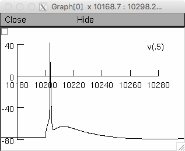

This is a four-compartment model of a L5PC as described in Mäki-Marttunen T, Halnes G, Devor A, Metzner C, Dale AM, Andreassen OA, Einevoll GT: "A stepwise neuron model fitting procedure designed for recordings with high spatial resolution, application to layer V pyramidal cells", Journal of Neuroscience Methods (2017), from which Figures 1-4 and parts of Figure 8 are reproduced in this entry. The single-cell model is fitted to behave in a similar fashion as that described in: Hay E, Hill S, Schuermann F, Markram H, and Segev I (2011) "Models of neocortical layer 5b pyramidal cells capturing a wide range of dendritic and perisomatic active properties" PLoS Comput Biol 7:e1002107. The network model is fitted to behave in a similar fashion as that described in: Hay E and Segev I (2015) "Dendritic Excitability and Gain Control in Recurrent Cortical Microcircuits" Cerebral Cortex 25(10):3561-71. Four folders are included in this ModelDB entry: single_cell: NEURON implementation for single-cell simulations. The modeldb auto-launch runs here (mosinit.hoc) and produces the following graph which corresponds to the blue trace in figure 4C in the paper:  single_cell_NML: NeuroML2 description of the single-cell model snmf: Python scripts for running the parameter optimizations network: Python/NEURON implementation for network simulations Please see the readme's in the above folders and if needed this additional help file which explains how to run NEURON models: https://senselab.med.yale.edu/ModelDB/NEURON_DwnldGuide.cshtml